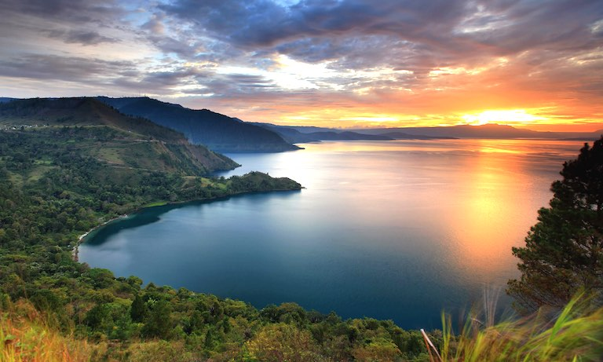

BE THE PART OF THIS WONDERFUL JOURNEY
Incredible Indonesia!
Explore
Exotic Place
This place amazes with its fabulous atmosphere and nature
Bromo Mountain
The Bromo, or Mount Bromo 7,641 ft it is not the highest peak of the massif, but the most famous. The area is one of the most visited tourist destinations in East Java, and the volcano is included in the Bromo Tengger Semeru National Park.
Learn more...

Borobudur Temple
Borobudur, also transcribed Barabudur is a 9th-century Mahayana Buddhist temple in Magelang Regency. It is the world's largest Buddhist temple. The temple consists of nine stacked platforms, six square and three circular, topped by a central dome.
Learn more...

Bali Island
Bali is a province of Indonesia and the westernmost of the Lesser Sunda Islands. East of Java and west of Lombok, the province includes the island of Bali and a few smaller neighbouring islands, notably Nusa Penida, Nusa Lembongan, and Nusa Ceningan to the southeast.
Learn more...
You'll fall in love with
INDONESIA
Explore Indonesia from Sabang to Merauke
Tumpak Sewu Waterfall
Tumpak Sewu Waterfall is a tiered waterfall that is located between the Pronojiwo District, Lumajang Regency.
Learn more...
Komodo Island
Komodo Island is an island located in the Nusa Tenggara Islands, which is separated by the Sape Strait.
Learn more...

National Monument
National Monument is a 132 m obelisk in the centre of Merdeka Square, Central Jakarta.
Learn more...
Waerebo Village
The traditional village of Wae Rebo in the district of Manggarai on the island of Flores, East Nusatenggara.
Learn more...
Jayawijaya Mountain
The Jayawiya Mountain is a mountain range east of Maoke in the central highlands region of the Indonesian.
Learn more...

Lake Toba
Lake Toba is 100 kilometers long, 30 kilometers wide and 508 meters deep. The lake is located in the middle of the northern part of the island of Sumatra
Learn more...

Raja Ampat
is an archipelago located off the northwest tip of Bird's Head Peninsula on the island of New Guinea, in Indonesia's Southwest Papua province.
Learn more...
Mandalika
The Mandalika International Circuit is a racing circuit located in the Mandalika Special Economic Zone in Central Lombok, West Nusa Tenggara.
Learn more...
Popular Hotel in
INDONESIA
Explore Indonesia from Sabang to Merauke
Slide 1
Slide 2
Slide 3
Slide 4
Slide 5
Slide 6
Slide 7
Slide 8
Slide 9